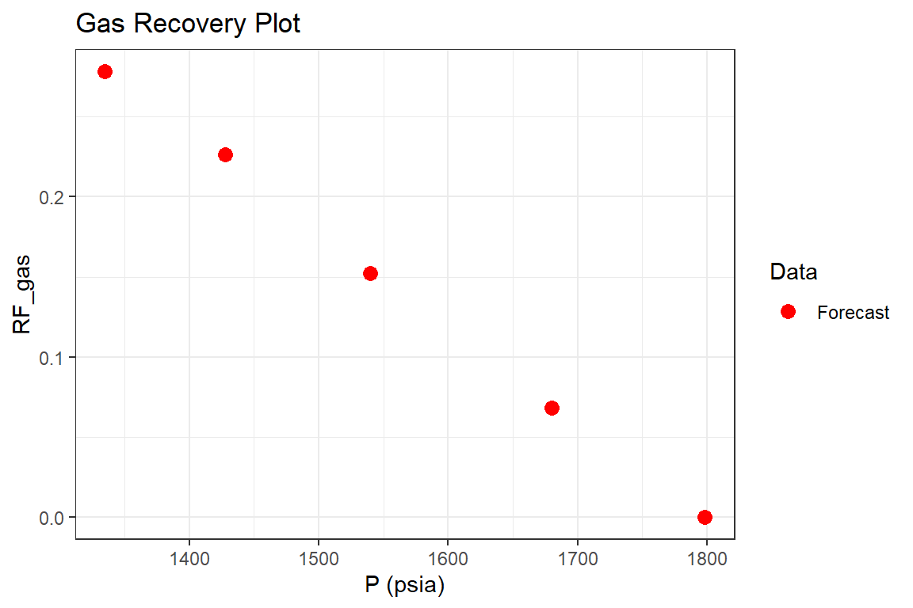

Material Balance - Dry and Wet Gas Reservoirs
DryWetGas.Rmd
Examples
Example 1: Dry Gas Reservoir (Ikoku, Chi, 1984)
Part I: History Match
library(Rmbal) library(Rrelperm) library(pracma) library(minpack.lm) library(ggplot2) library(dplyr) #> #> Attaching package: 'dplyr' #> The following objects are masked from 'package:stats': #> #> filter, lag #> The following objects are masked from 'package:base': #> #> intersect, setdiff, setequal, union library(magrittr) #> #> Attaching package: 'magrittr' #> The following objects are masked from 'package:pracma': #> #> and, mod, or p_pvt <- c(1798, 1680, 1540, 1428, 1335) # psia Bg <- c(0.00152, 0.00163, 0.00179, 0.00196, 0.00210) # RB/SCF Bo <- rep(0, length(p_pvt)) # RB/STB Rv <- rep(0, length(p_pvt)) # STB/SCF Rs <- rep(1e8, length(p_pvt)) # SCF/STB Bw <- rep(1, length(p_pvt)) # RB/STB muo <- rep(0.5, length(p_pvt)) # cp muw <- rep(0.25, length(p_pvt)) # cp mug <- rep(0.015, length(p_pvt)) # cp pvt_table <- data.frame(p = p_pvt, Bo = Bo, Rs = Rs, Rv = Rv, Bg = Bg, Bw = Bw, muo = muo, mug = mug, muw = muw) p <- c(1798, 1680, 1540, 1428, 1335) Np <- rep(0, length.out = length(p)) Gp <- c(0, 0.96, 2.12, 3.21, 3.92) * 1e9 # SCF Wp <- rep(0, length.out = length(p)) We <- rep(0, length.out = length(p)) Wi <- rep(0, length.out = length(p)) wf <- rep(1, length.out = length(p)) mbal_optim_gas_lst <- mbal_optim_param_gas(input_unit = "Field", output_unit = "Field", unknown_param = "G", aquifer_model = NULL, G = NULL, phi = 0.13, swi = 0.52, Np = Np, Gp = Gp, Wp = Wp, Wi = Wi, We = We, pd = 0, p = p, pvt = pvt_table, M = 0, cf = 3e-6, wf = wf, sgrw = 0.0) time_lst <- mbal_time(c(0, 0.5, 1.0, 1.5, 2.0), "year") # a number of plots will be automatically generated for quality check optim_results <- mbal_optim_gas(mbal_optim_gas_lst, time_lst)
glimpse(optim_results) #> List of 17 #> $ input_unit : chr "Field" #> $ output_unit: chr "Field" #> $ G : num 1.41e+10 #> $ phi : num 0.13 #> $ swi : num 0.52 #> $ pd : num 0 #> $ p : num [1:5] 1798 1680 1540 1428 1335 #> $ cf : num [1:5] 3e-06 3e-06 3e-06 3e-06 3e-06 #> $ M : num 0 #> $ pvt :'data.frame': 5 obs. of 9 variables: #> ..$ p : num [1:5] 1798 1680 1540 1428 1335 #> ..$ Bo : num [1:5] 0 0 0 0 0 #> ..$ Rs : num [1:5] 1e+08 1e+08 1e+08 1e+08 1e+08 #> ..$ Rv : num [1:5] 0 0 0 0 0 #> ..$ Bg : num [1:5] 0.00152 0.00163 0.00179 0.00196 0.0021 #> ..$ Bw : num [1:5] 1 1 1 1 1 #> ..$ muo: num [1:5] 0.5 0.5 0.5 0.5 0.5 #> ..$ mug: num [1:5] 0.015 0.015 0.015 0.015 0.015 #> ..$ muw: num [1:5] 0.25 0.25 0.25 0.25 0.25 #> $ prod :'data.frame': 5 obs. of 3 variables: #> ..$ Np: num [1:5] 0 0 0 0 0 #> ..$ Gp: num [1:5] 0.00 9.60e+08 2.12e+09 3.21e+09 3.92e+09 #> ..$ Wp: num [1:5] 0 0 0 0 0 #> $ inj :'data.frame': 5 obs. of 1 variable: #> ..$ Wi: num [1:5] 0 0 0 0 0 #> $ We : num [1:5] 0 0 0 0 0 #> $ aquifer :List of 3 #> ..$ input_unit : chr "Field" #> ..$ output_unit: chr "Field" #> ..$ We : num [1:5] 0 0 0 0 0 #> ..- attr(*, "class")= chr [1:2] "NoA" "aquifer" #> $ wf : num [1:5] 1 1 1 1 1 #> $ sgrw : num 0 #> $ p_est : num [1:5] 1798 1680 1543 1426 1335 #> - attr(*, "class")= chr [1:2] "volumetric_gas" "mbal_gas"
Part II: Reservoir Performance
mbal_results <- mbal_perform_gas(optim_results, time_lst) mbal_results #> P (psia) Eo (bbl/STB) Eg (bbl/SCF) Ew (bbl/STB) Ef (bbl/bbl) Egwf (bbl/SCF) #> 1 1798 0 0.00000 0 0.000000 0.0000000000 #> 2 1680 0 0.00011 0 0.000354 0.0001111210 #> 3 1540 0 0.00027 0 0.000774 0.0002724510 #> 4 1428 0 0.00044 0 0.001110 0.0004435150 #> 5 1335 0 0.00058 0 0.001389 0.0005843985 #> Et (bbl) F (bbl) We Igd Inwd Ifwd Iawd Itot RF_oil #> 1 0 0 0 NA NA NA NA NA 0.00000000 #> 2 1566668 1564800 0 0.9899119 0 0.010088102 0 1 0.06817239 #> 3 3841220 3794800 0 0.9910039 0 0.008996113 0 1 0.15220726 #> 4 6253009 6291600 0 0.9920747 0 0.007925324 0 1 0.22628316 #> 5 8239291 8232000 0 0.9924735 0 0.007526542 0 1 0.27828500 #> RF_gas SOg SGg SWg SOT SGT SWT qo (STB/day) qg (SCF/day) qw (STB/day) #> 1 0.00000000 0 0.48 0.52 0 0.48 0.52 0 0 0 #> 2 0.06817239 0 0.48 0.52 0 0.48 0.52 0 5260274 0 #> 3 0.15220726 0 0.48 0.52 0 0.48 0.52 0 6356164 0 #> 4 0.22628316 0 0.48 0.52 0 0.48 0.52 0 5972603 0 #> 5 0.27828500 0 0.48 0.52 0 0.48 0.52 0 3890411 0 #> fo fw GOR (SCF/STB) kro/krg #> 1 0 0 Inf 0 #> 2 0 0 Inf 0 #> 3 0 0 Inf 0 #> 4 0 0 Inf 0 #> 5 0 0 Inf 0 p1 <- mbal_results %>% ggplot(aes(`P (psia)`, `RF_gas`, color = "Forecast")) + geom_point(size = 3) + scale_color_manual(name="Data", values=c("Forecast" = "red")) + ggtitle("Gas Recovery Plot") + theme_bw() p1

p2 <- mbal_results %>% tidyr::pivot_longer(cols = c("Igd", "Ifwd"), names_to = "Drive Mechanism", values_to = "Fraction", values_drop_na = TRUE) %>% ggplot(aes(`P (psia)`, Fraction, fill = `Drive Mechanism`)) + geom_area() + ggtitle("Energy Plot") + theme_bw() p2

Part III: Reservoir Forecast
# gas saturation above the bubble point is zero, however the mbal_forecast_param_oil() # requires a table of relative permeabilities as an input for the gas-oil system. # Therefore, an arbitrary table is generated using the 'Rrelperm' package. # The generated table does not impact the predictions above the bubble point. rel_perm <- as.data.frame(Rrelperm::kr2p_gl(SWCON = 0.52, SOIRG = 0.15, SORG = 0.15, SGCON = 0.05, SGCRIT = 0.05, KRGCL = 1, KROGCG = 1, NG = 1, NOG = 1.0, NP = 101)) colnames(rel_perm) <- c("Sg", "Sl", "Krg", "Krog") forecast_lst <- mbal_forecast_param_gas(input_unit = "Field", output_unit = "Field", G = 1.41e10, phi = 0.13, swi = 0.52, pd = 0, p = p, pvt = pvt_table, M = 0, cf = 3e-6, wf = wf, rel_perm = rel_perm) glimpse(forecast_lst) #> List of 12 #> $ input_unit : chr "Field" #> $ output_unit: chr "Field" #> $ G : num 1.41e+10 #> $ phi : num 0.13 #> $ swi : num 0.52 #> $ pd : num 0 #> $ p : num [1:5] 1798 1680 1540 1428 1335 #> $ cf : num [1:5] 3e-06 3e-06 3e-06 3e-06 3e-06 #> $ M : num 0 #> $ pvt :'data.frame': 5 obs. of 9 variables: #> ..$ p : num [1:5] 1798 1680 1540 1428 1335 #> ..$ Bo : num [1:5] 0 0 0 0 0 #> ..$ Rs : num [1:5] 1e+08 1e+08 1e+08 1e+08 1e+08 #> ..$ Rv : num [1:5] 0 0 0 0 0 #> ..$ Bg : num [1:5] 0.00152 0.00163 0.00179 0.00196 0.0021 #> ..$ Bw : num [1:5] 1 1 1 1 1 #> ..$ muo: num [1:5] 0.5 0.5 0.5 0.5 0.5 #> ..$ mug: num [1:5] 0.015 0.015 0.015 0.015 0.015 #> ..$ muw: num [1:5] 0.25 0.25 0.25 0.25 0.25 #> $ wf : num [1:5] 1 1 1 1 1 #> $ rel_perm :'data.frame': 101 obs. of 4 variables: #> ..$ Sg : num [1:101] 0 0.01 0.02 0.03 0.04 0.05 0.06 0.07 0.08 0.09 ... #> ..$ Sl : num [1:101] 1 0.99 0.98 0.97 0.96 0.95 0.94 0.93 0.92 0.91 ... #> ..$ Krg : num [1:101] 0 0 0 0 0 ... #> ..$ Krog: num [1:101] 1 1 1 1 1 ... #> - attr(*, "class")= chr [1:2] "volumetric_forecast_gas" "forecast_gas" forecast_results <- mbal_forecast_gas(forecast_lst, time_lst) forecast_results #> P (psia) SOg SGg SWg SOT SGT SWT GOR (SCF/STB) RF_oil RF_gas #> 1 1798 0 0.48 0.52 0 0.48 0.52 Inf 0.00000000 0.00000000 #> 2 1680 0 0.48 0.52 0 0.48 0.52 Inf 0.06748466 0.06748466 #> 3 1540 0 0.48 0.52 0 0.48 0.52 Inf 0.15083799 0.15083799 #> 4 1428 0 0.48 0.52 0 0.48 0.52 Inf 0.22448980 0.22448980 #> 5 1335 0 0.48 0.52 0 0.48 0.52 Inf 0.27619048 0.27619048 #> Liq_volume Igd Inwd Ifwd Iawd Itot #> 1 0 NA NA NA NA NA #> 2 0 0.9899119 0 0.010088102 0 1 #> 3 0 0.9910039 0 0.008996113 0 1 #> 4 0 0.9920747 0 0.007925324 0 1 #> 5 0 0.9924735 0 0.007526542 0 1 p1 <- forecast_results %>% ggplot(aes(`P (psia)`, `RF_gas`, color = "Forecast")) + geom_point(size = 3) + geom_point(data = mbal_results, aes(`P (psia)`, `RF_gas`, color = "Field"))+ scale_color_manual(name="Data", values=c("Forecast" = "red", "Field" = "black")) + ggtitle("Oil Recovery Plot") + theme_bw() p1
Example 2: Dry Gas Reservoir with Aquifer (Pletcher, 2002)
Part I: History Match
library(Rmbal) library(Rrelperm) library(pracma) library(minpack.lm) library(ggplot2) library(dplyr) library(magrittr) p_pvt <- c(6411, 5947, 5509, 5093, 4697, 4319, 3957, 3610, 3276, 2953, 2638) Bg <- c(6279, 6587, 6933, 7327, 7778, 8300, 8910, 9628, 10487, 11532, 12829) / 10000 # RB/SCF Bo <- rep(0, length(p_pvt)) # RB/STB Rv <- rep(0, length(p_pvt)) # STB/SCF Rs <- rep(1e8, length(p_pvt)) # SCF/STB Bw <- c(1.0452, 1.0467, 1.0480, 1.0493, 1.0506, 1.0517, 1.0529, 1.0540, 1.0551, 1.0560, 1.0571) # RB/STB muo <- rep(0.5, length(p_pvt)) # cp muw <- rep(0.25, length(p_pvt)) # cp mug <- rep(0.025, length(p_pvt)) # cp pvt_table <- data.frame(p = p_pvt, Bo = Bo, Rs = Rs, Rv = Rv, Bg = Bg, Bw = Bw, muo = muo, mug = mug, muw = muw) p <- c(6411, 5947, 5509, 5093, 4697, 4319, 3957, 3610, 3276, 2953, 2638) # psia Np <- rep(0, length.out = length(p)) Gp <- c(0, 5.475, 10.950, 16.425, 21.900, 27.375, 32.850, 38.325, 43.800, 49.275, 54.750) * 1e9 # SCF Wp <- c(0, 378, 1434, 3056, 5284, 8183, 11864, 16425, 22019, 28860, 37256) # STB Wi <- rep(0, length.out = length(p)) wf <- rep(1, length.out = length(p)) mbal_optim_gas_lst <- mbal_optim_param_gas(input_unit = "Field", output_unit = "Field", unknown_param = "We", aquifer_model = "pot", G = 101e9, phi = 0.15, swi = 0.15, Np = Np, Gp = Gp, Wp = Wp, Wi = Wi, We = NULL, pd = 0, p = p, pvt = pvt_table, M = 0, cf = 6e-6, wf = wf, sgrw = 0.0, phi_a = 0.15, h_a = 200, r_a = 500, r_R = 210.6, tetha = 360, cw_a = 3e-6, cf_a = 6e-6, mult_len = 2) time_lst <- mbal_time(c(1:length(p)), "year") # a number of plots will be automatically generated for quality check optim_results <- mbal_optim_gas(mbal_optim_gas_lst, time_lst)
glimpse(optim_results) #> List of 17 #> $ input_unit : chr "Field" #> $ output_unit: chr "Field" #> $ G : num 1.01e+11 #> $ phi : num 0.15 #> $ swi : num 0.15 #> $ pd : num 0 #> $ p : num [1:11] 6411 5947 5509 5093 4697 ... #> $ cf : num [1:11] 6e-06 6e-06 6e-06 6e-06 6e-06 6e-06 6e-06 6e-06 6e-06 6e-06 ... #> $ M : num 0 #> $ pvt :'data.frame': 11 obs. of 9 variables: #> ..$ p : num [1:11] 6411 5947 5509 5093 4697 ... #> ..$ Bo : num [1:11] 0 0 0 0 0 0 0 0 0 0 ... #> ..$ Rs : num [1:11] 1e+08 1e+08 1e+08 1e+08 1e+08 1e+08 1e+08 1e+08 1e+08 1e+08 ... #> ..$ Rv : num [1:11] 0 0 0 0 0 0 0 0 0 0 ... #> ..$ Bg : num [1:11] 0.628 0.659 0.693 0.733 0.778 ... #> ..$ Bw : num [1:11] 1.05 1.05 1.05 1.05 1.05 ... #> ..$ muo: num [1:11] 0.5 0.5 0.5 0.5 0.5 0.5 0.5 0.5 0.5 0.5 ... #> ..$ mug: num [1:11] 0.025 0.025 0.025 0.025 0.025 0.025 0.025 0.025 0.025 0.025 ... #> ..$ muw: num [1:11] 0.25 0.25 0.25 0.25 0.25 0.25 0.25 0.25 0.25 0.25 ... #> $ prod :'data.frame': 11 obs. of 3 variables: #> ..$ Np: num [1:11] 0 0 0 0 0 0 0 0 0 0 ... #> ..$ Gp: num [1:11] 0.00 5.48e+09 1.10e+10 1.64e+10 2.19e+10 ... #> ..$ Wp: num [1:11] 0 378 1434 3056 5284 ... #> $ inj :'data.frame': 11 obs. of 1 variable: #> ..$ Wi: num [1:11] 0 0 0 0 0 0 0 0 0 0 ... #> $ We : NULL #> $ aquifer :List of 12 #> ..$ input_unit : chr "Field" #> ..$ output_unit: chr "Field" #> ..$ model : chr "pot" #> ..$ phi : num 0.15 #> ..$ h_a : num 200 #> ..$ r_a : num 63512 #> ..$ r_R : num 211 #> ..$ tetha : num 360 #> ..$ c_water : num 3e-06 #> ..$ c_rock : num 6e-06 #> ..$ pressure : num [1:11] 6411 5947 5509 5093 4697 ... #> ..$ mult_len : num 1 #> ..- attr(*, "class")= chr [1:2] "pot" "aquifer" #> $ wf : num [1:11] 1 1 1 1 1 1 1 1 1 1 ... #> $ sgrw : num 0 #> $ p_est : num [1:11] 6411 5949 5509 5092 4695 ... #> - attr(*, "class")= chr [1:2] "water_drive_gas" "mbal_gas"
Part II: Reservoir Performance
mbal_results <- mbal_perform_gas(optim_results, time_lst) mbal_results #> P (psia) Eo (bbl/STB) Eg (bbl/SCF) Ew (bbl/STB) Ef (bbl/bbl) Egwf (bbl/SCF) #> 1 6411 0 0.0000 0.0000 0.000000 0.00000000 #> 2 5947 0 0.0308 0.0015 0.002784 0.03301558 #> 3 5509 0 0.0654 0.0028 0.005412 0.06969472 #> 4 5093 0 0.1048 0.0041 0.007908 0.11107634 #> 5 4697 0 0.1499 0.0054 0.010284 0.15806933 #> 6 4319 0 0.2021 0.0065 0.012552 0.21206133 #> 7 3957 0 0.2631 0.0077 0.014724 0.27479301 #> 8 3610 0 0.3349 0.0088 0.016806 0.34824761 #> 9 3276 0 0.4208 0.0099 0.018810 0.43574460 #> 10 2953 0 0.5253 0.0108 0.020748 0.54177162 #> 11 2638 0 0.6550 0.0119 0.022638 0.67298439 #> Et (bbl) F (bbl) We Igd Inwd Ifwd #> 1 0 0 0 NA NA NA #> 2 3617316708 3606382896 282743700 0.8599745 0.07816393 0.06186171 #> 3 7588808773 7591636503 549644004 0.8704133 0.07242823 0.05715868 #> 4 12021845864 12034600707 803138356 0.8804638 0.06680658 0.05272990 #> 5 17009441970 17033825551 1044445479 0.8900880 0.06140387 0.04850847 #> 6 22692969573 22721258606 1274784097 0.8994900 0.05617529 0.04433506 #> 7 29249454812 29269362492 1495372932 0.9084990 0.05112481 0.04037663 #> 8 36879813117 36899327312 1706821346 0.9171657 0.04628064 0.03655412 #> 9 45920529098 45933083232 1910348062 0.9255294 0.04160118 0.03286992 #> 10 56826075082 56823960476 2107171801 0.9336436 0.03708107 0.02927589 #> 11 70270504750 70238814383 2299120650 0.9414334 0.03271815 0.02584902 #> Iawd Itot RF_oil RF_gas SOg SGg SWg SOT SGT #> 1 NA NA 0.00000000 0.00000000 0 0.85 0.15 0 0.8500000 #> 2 -1.093774e-07 1 0.05437227 0.05437227 0 0.85 0.15 0 0.8462103 #> 3 -1.980327e-07 1 0.10837548 0.10837548 0 0.85 0.15 0 0.8426331 #> 4 -2.667361e-07 1 0.16245145 0.16245145 0 0.85 0.15 0 0.8392355 #> 5 -3.263699e-07 1 0.21652136 0.21652136 0 0.85 0.15 0 0.8360012 #> 6 -3.792391e-07 1 0.27070225 0.27070225 0 0.85 0.15 0 0.8329140 #> 7 -4.270714e-07 1 0.32502645 0.32502645 0 0.85 0.15 0 0.8299575 #> 8 -4.694153e-07 1 0.37925495 0.37925495 0 0.85 0.15 0 0.8271234 #> 9 -5.059229e-07 1 0.43354506 0.43354506 0 0.85 0.15 0 0.8243956 #> 10 -5.363059e-07 1 0.48788970 0.48788970 0 0.85 0.15 0 0.8217577 #> 11 -5.604530e-07 1 0.54232409 0.54232409 0 0.85 0.15 0 0.8191851 #> SWT qo (STB/day) qg (SCF/day) qw (STB/day) fo fw #> 1 0.1500000 0 0.0e+00 0.000000 0 0.000000e+00 #> 2 0.1537897 0 1.5e+07 1.035616 0 1.097090e-07 #> 3 0.1573669 0 1.5e+07 2.893151 0 2.915545e-07 #> 4 0.1607645 0 1.5e+07 4.443836 0 4.242678e-07 #> 5 0.1639988 0 1.5e+07 6.104110 0 5.496678e-07 #> 6 0.1670860 0 1.5e+07 7.942466 0 6.709306e-07 #> 7 0.1700425 0 1.5e+07 10.084932 0 7.944943e-07 #> 8 0.1728766 0 1.5e+07 12.495890 0 9.119690e-07 #> 9 0.1756044 0 1.5e+07 15.326027 0 1.027970e-06 #> 10 0.1782423 0 1.5e+07 18.742466 0 1.144180e-06 #> 11 0.1808149 0 1.5e+07 23.002740 0 1.263604e-06 #> GOR (SCF/STB) kro/krg #> 1 Inf 0 #> 2 Inf 0 #> 3 Inf 0 #> 4 Inf 0 #> 5 Inf 0 #> 6 Inf 0 #> 7 Inf 0 #> 8 Inf 0 #> 9 Inf 0 #> 10 Inf 0 #> 11 Inf 0 p1 <- mbal_results %>% ggplot(aes(`P (psia)`, `RF_gas`, color = "Forecast")) + geom_point(size = 3) + scale_color_manual(name="Data", values=c("Forecast" = "red")) + ggtitle("Gas Recovery Plot") + theme_bw() p1
Example 3: Wet Gas Reservoir (Walsh & Lake, 2003)
Part I: Reservoir Forecast
library(Rmbal) library(Rrelperm) library(pracma) library(minpack.lm) library(ggplot2) library(dplyr) library(magrittr) p_pvt <- c(10300, 9800, 9300, 8800, 8300, 7800, 7300, 6800, 6300, 5800, 5300, 4800, 4300, 3800, 3300, 2800, 2300, 1800, 1300, 1050, 800, 738, 300) # psia Bg <- c(0.5, 0.51, 0.52, 0.532, 0.545, 0.560, 0.577, 0.597, 0.621, 0.648, 0.668, 0.72, 0.77, 0.83, 0.92, 1.06, 1.27, 1.63, 2.26, 2.925, 3.59, 4.19, 8.39) / 1000 # RB/SCF Bo <- c(18.62, 18.97, 19.36, 19.8, 20.20, 20.85, 21.49, 22.23, 23.11, 24.15, 25.31, 26.80, 28.66, 30.89, 34.24, 39.45, 47.26, 60.66, 84.11, 108.86, 133.60, 155.93, 312.24) # RB/STB Rv <- rep(26.9, length(p_pvt)) / 1e6 # STB/SCF Rs <- rep(37216, length(p_pvt)) # SCF/STB cw <- 2e-6 Bwi <- 1.0 Bw <- Bwi * exp(cw * (p_pvt[1] - p_pvt)) # RB/STB muo <- rep(0.5, length(p_pvt)) # cp muw <- rep(0.25, length(p_pvt)) # cp mug <- c(0.047, 0.0455, 0.044, 0.0425, 0.041, 0.00395, 0.0379, 0.0363, 0.0347, 0.033, 0.0311, 0.0289, 0.02267, 0.0243, 0.0220, 0.0197, 0.0177, 0.0160, 0.0147, 0.0142, 0.0138, 0.0136, 0.0128) # cp pvt_table <- data.frame(p = p_pvt, Bo = Bo, Rs = Rs, Rv = Rv, Bg = Bg, Bw = Bw, muo = muo, mug = mug, muw = muw) p <- p_pvt wf <- rep(1,length(p)) # in-situ oil saturation is zero, however the mbal_forecast_param_gas() # requires a table of relative permeabilities as an input for the gas-oil system. # Therefore, an arbitrary table is generated using the 'Rrelperm' package. # The generated table does not impact the predictions. rel_perm <- as.data.frame(Rrelperm::kr2p_gl(SWCON = 0.2, SOIRG = 0.15, SORG = 0.15, SGCON = 0.05, SGCRIT = 0.05, KRGCL = 1, KROGCG = 1, NG = 2.0, NOG = 2.0, NP = 101)) colnames(rel_perm) <- c("Sg", "Sl", "Krg", "Krog") forecast_lst <- mbal_forecast_param_gas(input_unit = "Field", output_unit = "Field", G = 69.48e9, phi = 0.1, swi = 0.2, pd = 0, p = p, pvt = pvt_table, cf = 3e-6, M = 0, wf = wf, rel_perm = rel_perm) time_lst <- mbal_time(1:length(p_pvt), "year") glimpse(forecast_lst) #> List of 12 #> $ input_unit : chr "Field" #> $ output_unit: chr "Field" #> $ G : num 6.95e+10 #> $ phi : num 0.1 #> $ swi : num 0.2 #> $ pd : num 0 #> $ p : num [1:23] 10300 9800 9300 8800 8300 7800 7300 6800 6300 5800 ... #> $ cf : num [1:23] 3e-06 3e-06 3e-06 3e-06 3e-06 3e-06 3e-06 3e-06 3e-06 3e-06 ... #> $ M : num 0 #> $ pvt :'data.frame': 23 obs. of 9 variables: #> ..$ p : num [1:23] 10300 9800 9300 8800 8300 7800 7300 6800 6300 5800 ... #> ..$ Bo : num [1:23] 18.6 19 19.4 19.8 20.2 ... #> ..$ Rs : num [1:23] 37216 37216 37216 37216 37216 ... #> ..$ Rv : num [1:23] 2.69e-05 2.69e-05 2.69e-05 2.69e-05 2.69e-05 2.69e-05 2.69e-05 2.69e-05 2.69e-05 2.69e-05 ... #> ..$ Bg : num [1:23] 0.0005 0.00051 0.00052 0.000532 0.000545 0.00056 0.000577 0.000597 0.000621 0.000648 ... #> ..$ Bw : num [1:23] 1 1 1 1 1 ... #> ..$ muo: num [1:23] 0.5 0.5 0.5 0.5 0.5 0.5 0.5 0.5 0.5 0.5 ... #> ..$ mug: num [1:23] 0.047 0.0455 0.044 0.0425 0.041 0.00395 0.0379 0.0363 0.0347 0.033 ... #> ..$ muw: num [1:23] 0.25 0.25 0.25 0.25 0.25 0.25 0.25 0.25 0.25 0.25 ... #> $ wf : num [1:23] 1 1 1 1 1 1 1 1 1 1 ... #> $ rel_perm :'data.frame': 101 obs. of 4 variables: #> ..$ Sg : num [1:101] 0 0.01 0.02 0.03 0.04 0.05 0.06 0.07 0.08 0.09 ... #> ..$ Sl : num [1:101] 1 0.99 0.98 0.97 0.96 0.95 0.94 0.93 0.92 0.91 ... #> ..$ Krg : num [1:101] 0 0 0 0 0 ... #> ..$ Krog: num [1:101] 1 1 1 1 1 ... #> - attr(*, "class")= chr [1:2] "volumetric_forecast_gas" "forecast_gas" forecast_results <- mbal_forecast_gas(forecast_lst, time_lst) forecast_results #> P (psia) SOg SGg SWg SOT SGT SWT GOR (SCF/STB) RF_oil RF_gas #> 1 10300 0 0.8 0.2 0 0.8 0.2 37174.72 0.00000000 0.00000000 #> 2 9800 0 0.8 0.2 0 0.8 0.2 37174.72 0.01960784 0.01960784 #> 3 9300 0 0.8 0.2 0 0.8 0.2 37174.72 0.03846154 0.03846154 #> 4 8800 0 0.8 0.2 0 0.8 0.2 37174.72 0.06015038 0.06015038 #> 5 8300 0 0.8 0.2 0 0.8 0.2 37174.72 0.08256881 0.08256881 #> 6 7800 0 0.8 0.2 0 0.8 0.2 37174.72 0.10714286 0.10714286 #> 7 7300 0 0.8 0.2 0 0.8 0.2 37174.72 0.13344887 0.13344887 #> 8 6800 0 0.8 0.2 0 0.8 0.2 37174.72 0.16247906 0.16247906 #> 9 6300 0 0.8 0.2 0 0.8 0.2 37174.72 0.19484702 0.19484702 #> 10 5800 0 0.8 0.2 0 0.8 0.2 37174.72 0.22839506 0.22839506 #> 11 5300 0 0.8 0.2 0 0.8 0.2 37174.72 0.25149701 0.25149701 #> 12 4800 0 0.8 0.2 0 0.8 0.2 37174.72 0.30555556 0.30555556 #> 13 4300 0 0.8 0.2 0 0.8 0.2 37174.72 0.35064935 0.35064935 #> 14 3800 0 0.8 0.2 0 0.8 0.2 37174.72 0.39759036 0.39759036 #> 15 3300 0 0.8 0.2 0 0.8 0.2 37174.72 0.45652174 0.45652174 #> 16 2800 0 0.8 0.2 0 0.8 0.2 37174.72 0.52830189 0.52830189 #> 17 2300 0 0.8 0.2 0 0.8 0.2 37174.72 0.60629921 0.60629921 #> 18 1800 0 0.8 0.2 0 0.8 0.2 37174.72 0.69325153 0.69325153 #> 19 1300 0 0.8 0.2 0 0.8 0.2 37174.72 0.77876106 0.77876106 #> 20 1050 0 0.8 0.2 0 0.8 0.2 37174.72 0.82905983 0.82905983 #> 21 800 0 0.8 0.2 0 0.8 0.2 37174.72 0.86072423 0.86072423 #> 22 738 0 0.8 0.2 0 0.8 0.2 37174.72 0.88066826 0.88066826 #> 23 300 0 0.8 0.2 0 0.8 0.2 37174.72 0.94040524 0.94040524 #> Liq_volume Igd Inwd Ifwd Iawd Itot #> 1 0 NA NA NA NA NA #> 2 0 0.9039497 0 0.096050307 0 1 #> 3 0 0.9039446 0 0.096055419 0 1 #> 4 0 0.9093993 0 0.090600698 0 1 #> 5 0 0.9136870 0 0.086312993 0 1 #> 6 0 0.9186383 0 0.081361727 0 1 #> 7 0 0.9235133 0 0.076486741 0 1 #> 8 0 0.9287579 0 0.071242140 0 1 #> 9 0 0.9343340 0 0.065666002 0 1 #> 10 0 0.9392795 0 0.060720472 0 1 #> 11 0 0.9404848 0 0.059515172 0 1 #> 12 0 0.9495238 0 0.050476211 0 1 #> 13 0 0.9548766 0 0.045123354 0 1 #> 14 0 0.9597959 0 0.040204128 0 1 #> 15 0 0.9657674 0 0.034232564 0 1 #> 16 0 0.9723039 0 0.027696133 0 1 #> 17 0 0.9783790 0 0.021621014 0 1 #> 18 0 0.9842514 0 0.015748602 0 1 #> 19 0 0.9892390 0 0.010760994 0 1 #> 20 0 0.9919508 0 0.008049230 0 1 #> 21 0 0.9935020 0 0.006498019 0 1 #> 22 0 0.9945174 0 0.005482582 0 1 #> 23 0 0.9973108 0 0.002689221 0 1 p1 <- forecast_results %>% ggplot(aes(`P (psia)`, `RF_gas`, color = "Forecast")) + geom_point(size = 3) + scale_color_manual(name="Data", values=c("Forecast" = "red")) + ggtitle("Gas Recovery Plot") + theme_bw() p1
References
Ikoku, Chi, U. (1984). Natural Gas Reservoir Engineering (p. 503). John Wiley & Sons, Ltd.
Pletcher, J. L. (2002). Improvements to Reservoir Material-Balance Methods. SPE Reservoir Evaluation & Engineering, 5(01), 49–59. https://doi.org/10.2118/75354-PA
Walsh, M. P., & Lake, L. W. (2003). A Generalized Approach to Primary Hydrocarbon Recovery (1st ed., p. 652; M. P. Walsh & L. W. Lake, Eds.). Retrieved from https://www.elsevier.com/books/a-generalized-approach-to-primary-hydrocarbon-recovery-of-petroleum-exploration-and-production/walsh/978-0-444-50683-2